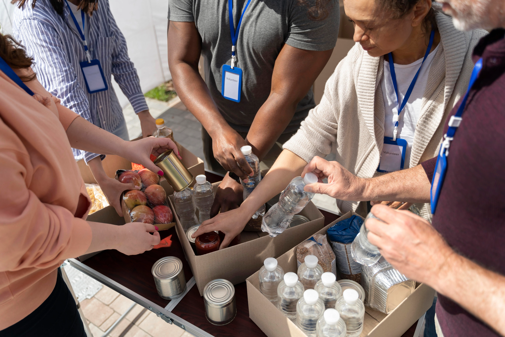
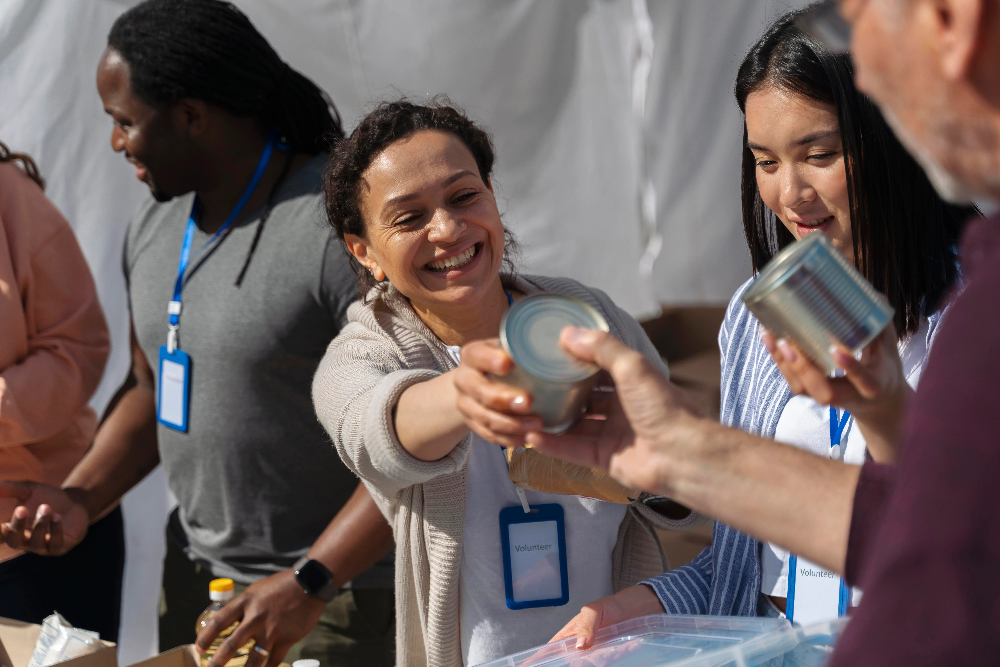
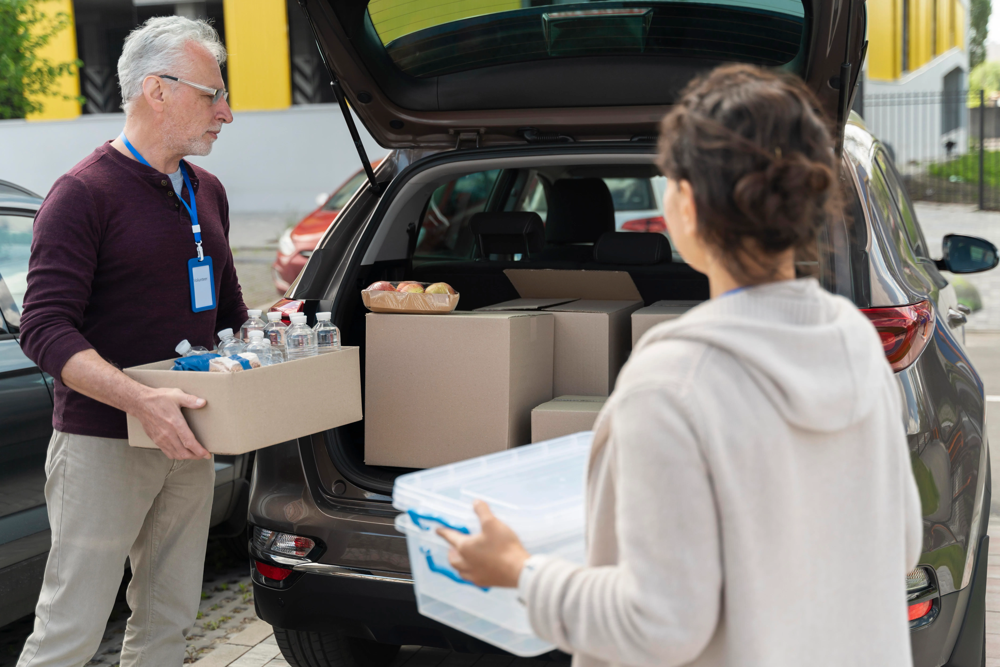

Projetos Sociais
Conheça algumas das iniciativas desenvolvidas pela
nossa organização para apoiar a comunidade.

Ações Comunitárias
Realizamos ações comunitárias com voluntários
para apoiar pessoas em situação de vulnerabilidade.

Entrega de Alimentos
Organizamos campanhas de arrecadação e distribuição
de alimentos para famílias que precisam de apoio.

Campanhas de Solidariedade
Nossas campanhas mobilizam voluntários e doadores
para levar recursos essenciais à comunidade.